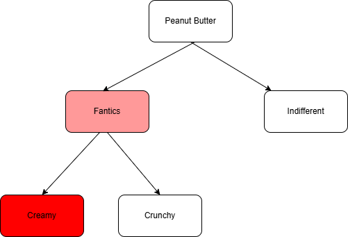

“There are moments when I wish I could roll back the clock and take all the sadness away, but I have the feeling that if I did, the joy would be gone as well.” - Nicholas Sparks
Lets talk about a controversial topic for a change, lets talk about one of the most divisive topics ever: Peanut Butter. When it comes to Peanut Butter, there are two kinds of people in the world: those who are strongly opinioniated about it and those who hardly ever think about it. Among the fanatics, there are those who questions its existence and those who can’t go a day without it. Double click on the fans and you will find binary divisions: Chunky vs Creamy, Homemade vs Storebought, Jif vs Skippy, the list goes on. Its almost as if Peanut Butter creates a dichotomy at every turn. You can tell which camp I belong from the tree below but that’s besides the point. What’s fascinating about it is the fact that it is a binary tree.

In other words, at every layer, there is always two opposing sides. This applies to Peanut Butter extends very well to everything we know; day and night, hot and cold, sweet and savoury, yin and yan, you name it. Anything you can think of has two complementary flavors, so it wouldn’t be a stretch to model life as a giant binary tree.Each child node represents two extremes of a spectrum and our preferences fall somewhere on the range. Each of us has a happy medium where we are most comfortable. Consciously or not, this is the ideal we strive for.
When it comes to fitness, one dichotomy comes to mind: catabolic vs anabolic workouts, better known as cardio vs strength. Endurance atheletes prefer the former while gym rats prefer the latter. As an ultra runner, my alliance is undoubtedly with cardio. I live for the flowy, peaceful, meditative nature of long steady state efforts. If I didn’t have to, I wouldn’t be bothered to lift anything heavier than my hydration pack; that’s my happy medium. I started weight training with the enthusiasm of a chore, but few years into it, I see its value. Its benefits have been widely documented but that’s not why I keep coming back. Sure, it has strengthened my muscles but what I really like is how much it makes me appreciate running. In a twisted way, doing the opposite of what I really enjoy is making me enjoy it even more. That right there is the real value of contrasts. Look around and you’ll find twisted knots everywhere.
- Rest is more restful after hard work. Hobbies are a lot more enjoyable after an engaging day of work.
- Debating with the opposition camp does wonders to your own convictions.
- Without villains, movies would be boring. I recently watched
Mufasaand couldn’t help but wonder that without Scar, Mufasa would be just a stay at home dad. - Same goes for weight training, in a twisted way, brutally destroying a muscle is the only way to build it.
Photo by Kaja Reichardt on Unsplash
Deep down we know this to be true, there is a place for contrasts in life. By definition, our desires come from experiencing the contrast, otherwise we would be indifferent. For instance, thanks to the Arctic polar vortex making this winter extra spicy, I have been dreaming of warmer weather; even typically gloomy Seattle weather seems better in comparison. That is the value of contrasts; to ignite desire and appreciation for the things we care about. Its why getting everything you want can paradoxically be unfulfilling. Life happens at the tension between contrasts.
That said, it is true that you only need food, clothes and shelter to survive. It is also true that your life will significantly improved if your hopes and dreams come true. It is my hope that all your dreams come true, I also hope that your misfortunes don’t stop coming. I hope you still get some dosage of the contrasts: the mishaps, trials and tribulations. Trust me, I say this with the best intentions.